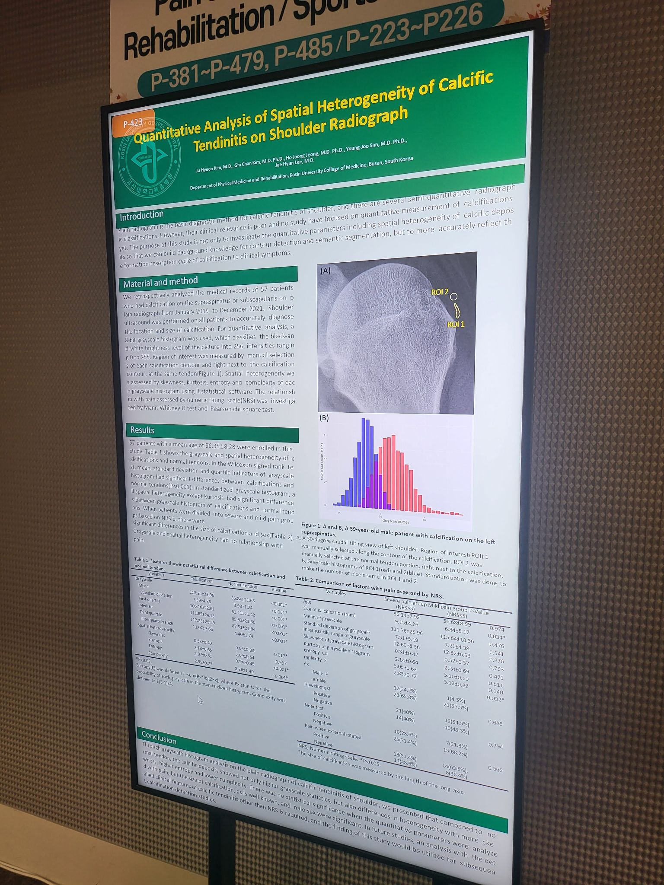
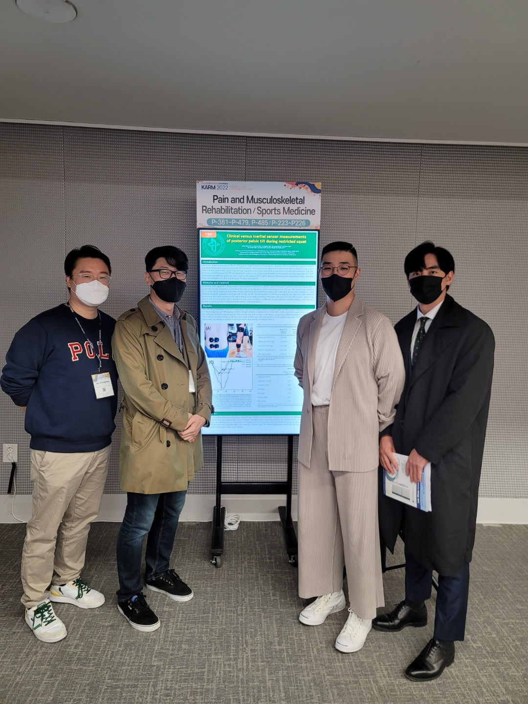
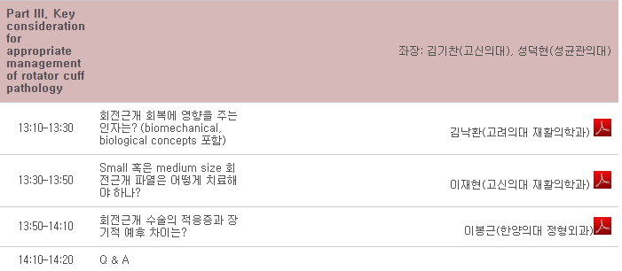
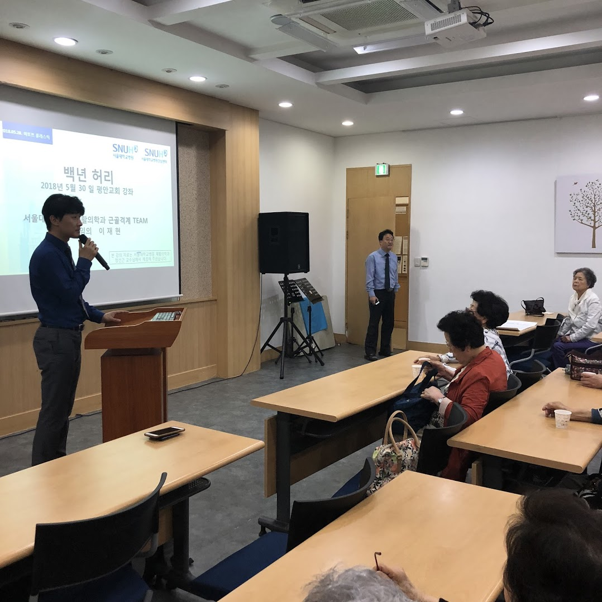
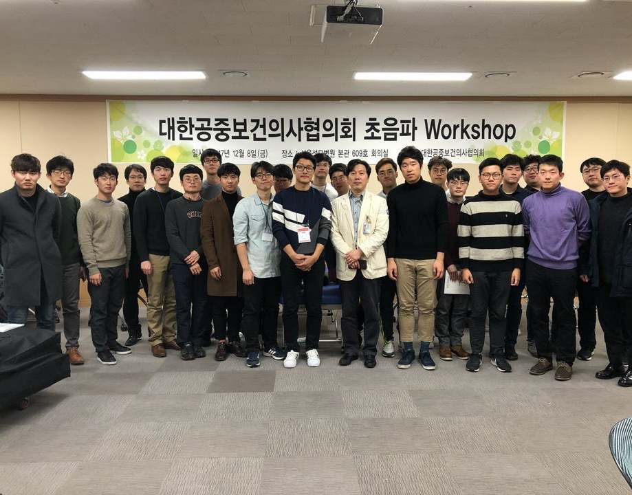

Album
2023
대한류마티스학회 2023년 연수강좌 (2023-03-25)

대한임상통증학회 2023년 춘계학술대회 (2023-03-18)

Physiatry ’23 (Association of Academic Physiatrist) (2023-02-21 ~ 24)

2022
대한신경근골격초음파학회 2022년 추계학술대회 (2022-11-05)

대한재활의학회 50주년 추계국제학술대회 (2022-10-28 ~ 29)
 
대한신경근골격초음파학회 2022년 제 3회 핸즈온 워크숍 (2022-09-03)

2022년 한국의지·보조기학회 춘계학술대회 (2022-05-28)

대한신경근골격 초음파학회 2022년 제 1회 핸즈온 워크숍 (2022-04-30)
.png)
대한임상통증학회 2022 춘계학술대회 (2022-03-26)

KNN 건강365 (2022-01-26) : 석회성건염편
https://youtu.be/V0JdGLBu3Po
KNN 건강365 (2022-01-20) : 목디스크편
.png)
대한신경근골격 초음파학회 2021-2022년 제2회 핸즈온 워크숍 (2022-01-14 ~ 15)


2021
대한임상통증학회 2021 온라인리뷰코스 (2021-12-04)

삼성메디슨(주) MSK 세미나 강연 후 교수님들과 (2021-11-27)

대한재활의학회 부산울산경남지회 제 150차 집담회 (2021-11-25)
대한재활의학회 부산울산경남지회 제 148차 집담회 (2021-7-15)
.png)
대한임상통증학회 2021 춘계학술대회 (2021-03-27)

~ 2020
대한임상통증학회 2020 온라인 리뷰코스 (2020-12-05)
대한임상통증학회 2020 추계학술대회 (2020-11-14)
대한골대사학회 부울경지회 제 4차 온오프라인 학술대회 및 연수강좌 (2020-10-24)
KNN 웰빙라이프 (2020-10-12~2020-10-17)
: 근골격계 질환의 잘못된 상식과 원인 및 재활치료 .png)
KNN 공개클리닉 웰 - 만성질환편 (2019-12-14)
www.knn.co.kr/198038?bf_cat=25 
AANEM, Austin, TX (2019-10-18)
.jpg)
제 3회 핑크하트 유방암환우 건강강좌 (2019-04-12)

대한신경근골격초음파학회, 최우수구연상 (2019-04-06)
(Related article: http://health.chosun.com/healthcarenews/sa239/2019/04/19/sa23920190419175206675.html) .jpg)
정선근 교수님과 마지막 Lab meeting 기념 (2019-02-27)
정선근 교수님과 마지막 Spine intervention 기념 (2019-02-15)
Orthopaedic Summit Evolving Technique, podium presentation, Las Vegas, NV (2018-12-08)
Google Nest 김기원 교수님 방문, Paloalto, CA (2018-12-04)
대한재활의학회 2018 추계학술대회 (2018-10-26)
2018 서울대학교 의과대학 재활의학교실 연수강좌 (2018-08-25)
.jpg)
평안교회 건강강좌 (2018-05-30)

강남시그넘하우스 건강강좌 (2018-05-24)
.jpg)
대한공중보건의사협의회 이취임식 (2018-02-23)
대한공중보건의사협의회 초음파 Workshop (2017-12-08)
